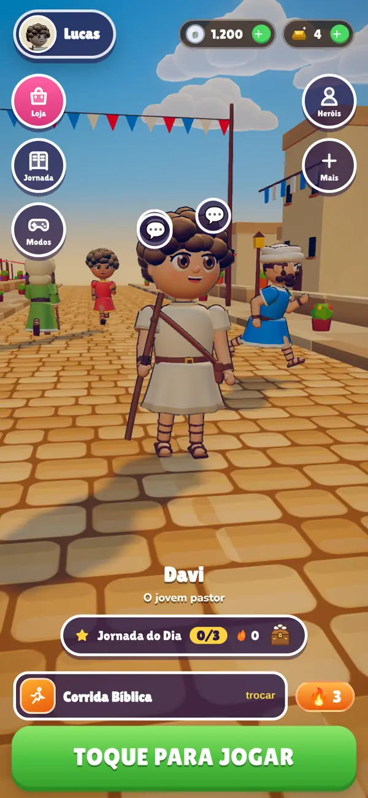
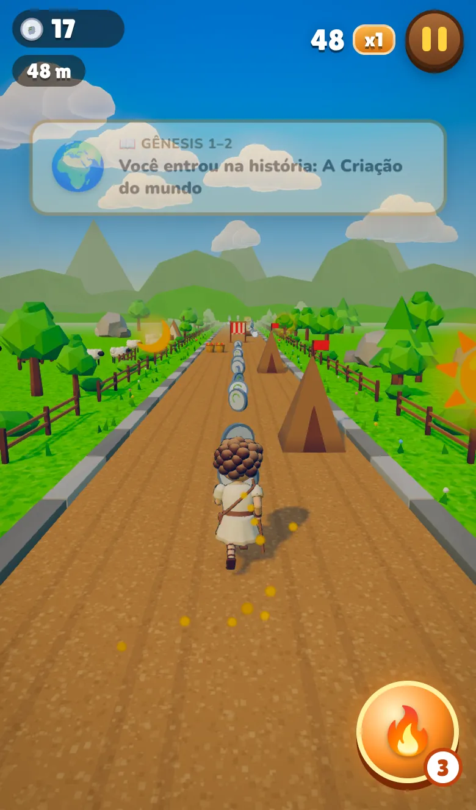
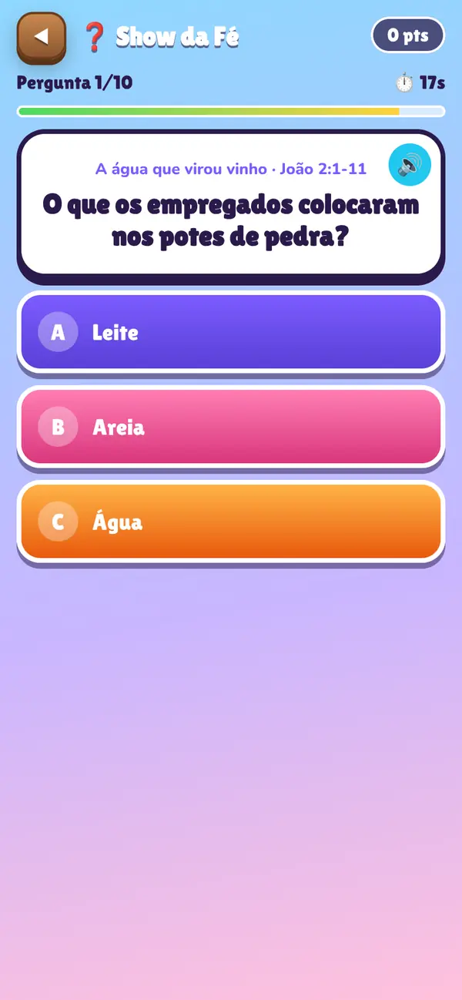
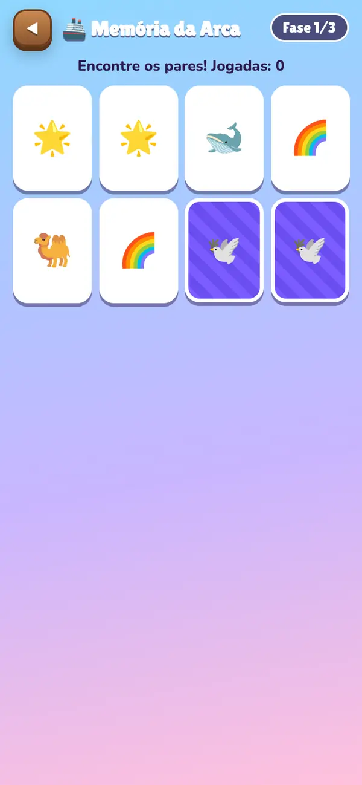
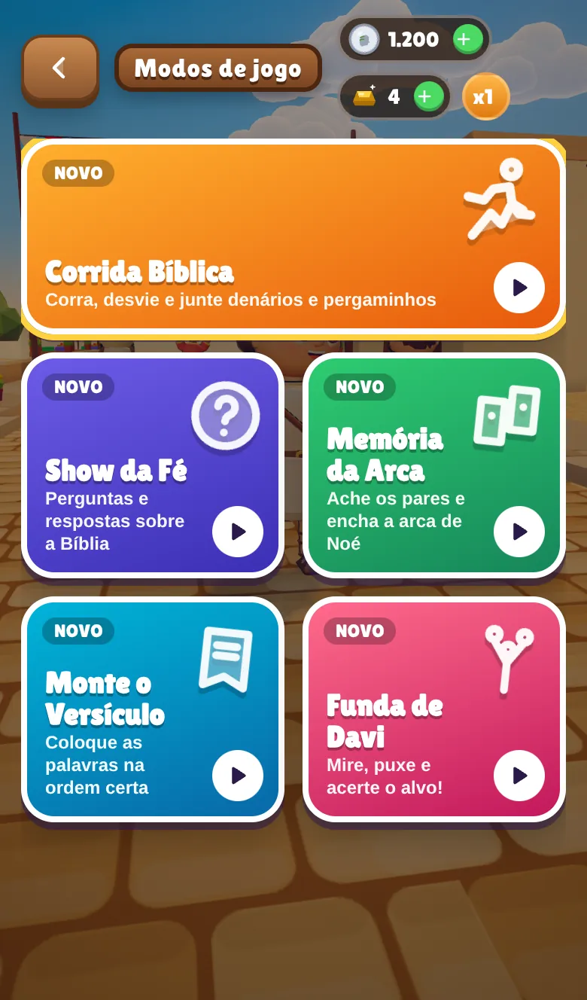
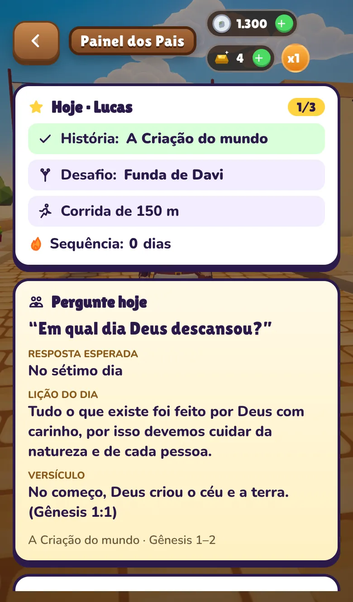

Seu filho joga.
E aprende a Bíblia.
Corrida, perguntas e minijogos com as histórias da Bíblia. Todo dia uma história nova, e você acompanha o que ele aprendeu.
Sem anúncios. Sem cartão para testar. Funciona no celular.

Tempo de tela que vale a pena
Você quer que seu filho cresça conhecendo a Palavra, mas competir com os jogos do celular não é fácil. A gente juntou os dois.
✕ "Ele só quer jogo"
As histórias da Bíblia viram aventura: o herói corre, escuta a narração e o cenário mostra a cena.
Ele nem percebe que está aprendendo.
✕ "Não sei o que ele faz no app"
O Painel dos Pais mostra o que foi feito hoje, a lição e o versículo, protegido por PIN.
Você sempre sabe o que perguntar.
✕ "Medo de compras sem querer"
Qualquer compra pede o PIN do responsável. As moedas do jogo são ganhas jogando.
Você no controle, sem susto.
10 minutos por dia, na ordem certa
Todo dia o app mostra três passos. Quem completa ganha o Baú do Dia e mantém a sequência de dias, como nos melhores apps de aprender.
História do dia
O herói entra na história: corre pelo cenário, escuta a narração e vê as figuras da cena. No fim, a lição e um quiz.
Desafio do dia
Um jogo rápido sorteado, com perguntas sobre as histórias: Show da Fé, Monte o Versículo, Memória da Arca ou Funda de Davi.
Corrida livre
Corra pelas ruas de Jerusalém, o deserto, o vale, o Egito e a Babilônia juntando denários e pergaminhos.
Baú do Dia
Completou os três? Abre o baú com prêmios e a sequência cresce. Voltar amanhã vira hábito.
Veja o jogo por dentro
Estas são telas reais do app, não montagens.

Viver a história
Corrida com narração em voz alta.

Show da Fé
Perguntas com tempo e sequência de acertos.

Memória da Arca
Cada par revela uma curiosidade bíblica.

5 modos de jogo
Corrida, quiz, memória, versículo e funda.
Feito para a criança querer voltar
Menino ou menina
Ela escolhe o herói ou a heroína: Davi, Moisés, Noé, José, Daniel, Sansão, Ester, Rute e Miriã, cada um com roupas para desbloquear.
Moedas do tempo da Bíblia
Ela junta denários (a moeda do tempo de Jesus) e talentos, e aprende a história de cada moeda: lepto, dracma, siclo e mais.
Poderes bíblicos
Dois toques ativam a Carruagem de Fogo, a Funda, o Cajado, o Manto, a Harpa ou a Força de Sansão.
Moradores que conversam
No lobby, personagens passeiam e falam com ela sobre a história do dia, com voz.
Loja do Dia
Roupas em destaque mudam todo dia. Tudo com PIN dos pais para comprar.
Jornada Bíblica
68 histórias do Gênesis à Igreja primitiva, em ordem, com lição, versículo e quiz em cada uma.
"O que você aprendeu hoje?"
O Painel dos Pais, protegido por PIN, entrega a pergunta pronta para a conversa em família.
- O que seu filho fez hoje: história, desafio e corrida
- Uma pergunta pronta, com a resposta esperada
- A lição do dia e o versículo para ler juntos
- Progresso: histórias lidas, quizzes acertados e sequência de dias
- PIN para compras, sem anúncios no jogo

Plano Família
Tudo liberado para a sua família, sem anúncios.
Jogo Bíblico Família
- Todas as histórias, modos e mapas
- Painel dos Pais com a pergunta do dia
- Sem anúncios, nunca
- Compras opcionais sempre com PIN
Perguntas dos pais
Para qual idade é?
Pensado para crianças de 4 a 12 anos. O modo Criança, que é o padrão, deixa a corrida mais calma para os menores.
Preciso pagar para testar?
Não. A versão de teste abre direto no navegador do celular, sem cartão. Nela nenhuma cobrança é feita.
Como funcionam as compras?
As moedas e os talentos são ganhos jogando. Quem quiser pode comprar pacotes, sempre depois de digitar o PIN que o responsável cria no cadastro.
E os dados do meu filho?
No cadastro pedimos apenas o nome (ou apelido), a idade e o e-mail do responsável, que aceita os termos. Nesta versão de teste esses dados ficam guardados só no aparelho.
As histórias são fiéis à Bíblia?
Cada história indica o trecho bíblico de onde vem, com linguagem simples para crianças, lição e versículo. Os pais podem ler junto pelo Painel dos Pais.
Funciona no iPhone e no Android?
Sim, abre no navegador de qualquer celular. O aplicativo nas lojas está a caminho.
Faça do tempo de tela um tempo de fé
Abra no celular do seu filho, crie o perfil em um minuto e veja a primeira história acontecer.
▶ Jogar agora, é grátis